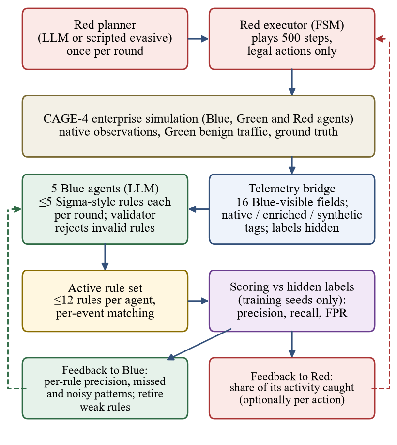
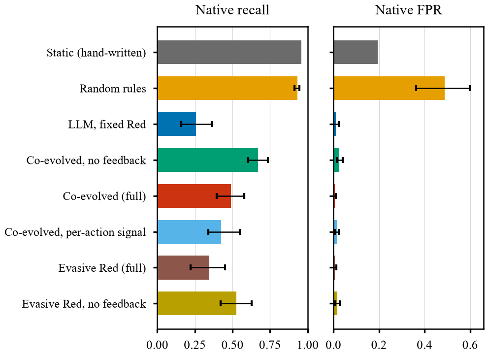
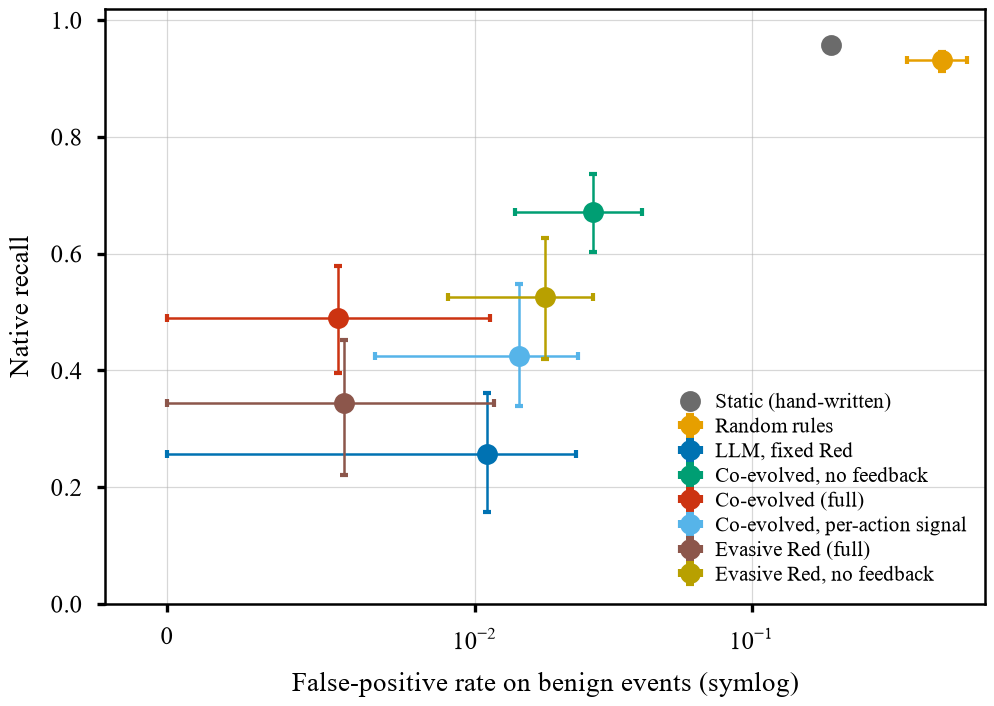
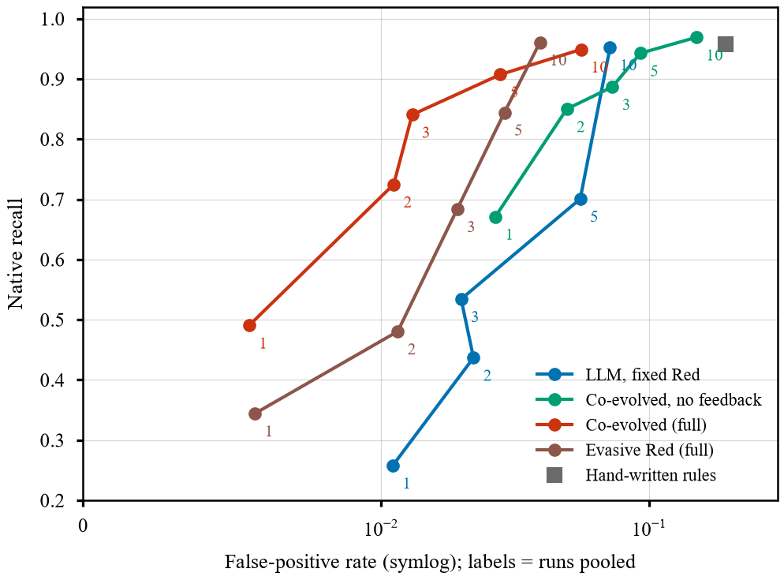
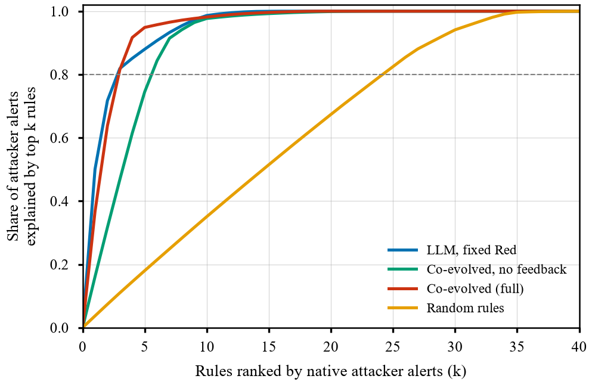
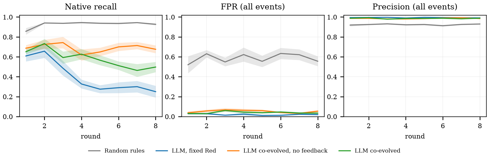

The idea in one minute
Security teams turn telemetry into alerts with detection rules, and attackers change behaviour until the rules stop firing. Purple teaming puts attackers and defenders in one feedback loop. We automated a small version of that loop.

Headline numbers
Frozen rule sets, scored on 10 held-out seeds and 4 attacker strategies, native events only. 10 independent training runs per condition (95% bootstrap intervals in the paper).
Results


What we found



Key table
Native events, four seen attacker strategies, mean over 10 runs (the hand-written set is a single run).
| Rule source | Precision | Recall | False-positive rate |
|---|---|---|---|
| Ten hand-written rules | 0.962 | 0.958 | 0.193 |
| Random rules | 0.909 | 0.932 | 0.488 |
| LLM, fixed attacker | 0.974 | 0.258 | 0.011 |
| LLM, co-evolved, no feedback | 0.992 | 0.671 | 0.027 |
| LLM, co-evolved (full) | 0.996 | 0.491 | 0.006 |
| LLM, co-evolved, per-action signal | 0.992 | 0.426 | 0.014 |
Honest limits
How it was built
Experiments ran on a single laptop (NVIDIA RTX 4050, 6 GB) with Qwen3-4B-Instruct for the main results, plus a three-run check with GLM-4.7-Flash. The three authors share equal credit. We used Claude (Anthropic) as a coding and writing assistant; the authors ran every experiment on their own hardware and checked every reported number against the result files.